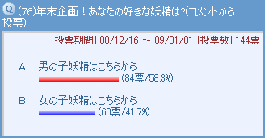
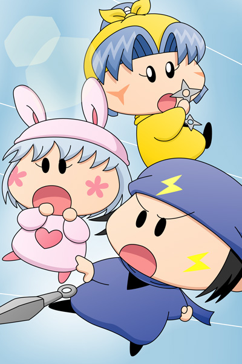

2008年末、年末企画として妖精の人気投票を行いました。細かいことは抜きに、まずは結果発表です(^^)。
| １位 | 19票 | ネズミ |
| ２位 | 18票 | パピィ |
| ３位 | 17票 | ヤマネ |
| ４位 | 15票 | ムルモ |
| ５位 | 10票 | ミルモ |
| ６位 | 6票 | アロマ |
| ７位 | 5票 | アクミ |
| ８位 | 3票 | ハンゾー |
| ビケー | ||
| ヤシチ | ||
| アンリ | ||
| １２位 | 2票 | サスケ |
| インチョ | ||
| ガビン | ||
| ペータ | ||
| センリ | ||
| ワルモ団 | ||
| リルム | ||
| ソフト | ||
| ２０位 | 1票 | エンマ |
| チック | ||
| シャドル | ||
| パンタ | ||
| オトメ | ||
| マルモ | ||
| ダアク | ||
| シショー | ||
| アクア | ||
| マンボ | ||
| テムズ | ||
| ピクモ | ||
| サリア | ||
| アンナ | ||
| オチョー | ||
| ワカバ | ||
| ラット |

１日１票までの投票で結果は上位が大混戦！そんな中で見事１位に輝いたのは、ムルモ屋本舗で人気急上昇中(?)のネズミでした。まさにねずみ年を締めくくる結果となりましたね。３位のヤマネと並んで、この兄妹は人気が高いです。
２位は惜しくもパピィ。ムルモとパピィのカップルも人気なので、ムルモと票の奪い合いになってしまったのでしょうか？２人ががっくりする姿が目に浮かびます。
2009年はどんな妖精がブームになるのでしょうか？2009年も皆さんでミルモでポン！を盛り上げていきましょう！［コメント一覧］
ヤマネ＆パピィ＆ネズミ(1)

投票の記念に上位３人の妖精を自由に描いてみました。ポスター風をイメージしてみたのですが、よく分からない絵になってしまいました(^◇^;)。でもなかなか見られないキャラの組み合わせで描くのは楽しいです。
妖精界のモンスターになぜか襲われそうになっていたパピィに、ネズミ兄妹が協力して立ち向かいます。本当はムルモに来て欲しかったところですが、４位のムルモは絵に登場することが出来ず・・・(^^;。皆さんはこの３人の組み合わせならどんなストーリーを想像しますか？
(2009/2/19)